Elastic Machine Learning 基礎介紹
這篇文章會介紹 Elastic Machine Learning 中的名詞、相關流程與案例介紹，機器學習解決問題主要分兩種
- 分群、分類 (Classification): 將資料分成不同的群組，群組內的成員都是類似的
- 回歸 (Regression): 了解兩個或多個變數間是否相關，還有相關方向與強度
機器學習使用的方法:
- 監督學習 (Supervised Learning): 輸入和輸出之間存在某一種關係或模式，要先把資料都進行標記，像是 “幾歲” 的 “女孩子” 購買 “名牌包” 比例最高
- 非監督學習 (Unsupervised Learning ): 不需要先進行標記，輸入數據，依據不同變量，找出相似或相關的群，傳統一定會上到的例子就是買尿布會順便買啤酒
資料:
- 時間序列資料 (Time Series)
- 面板數據 (Panel Data)
- 橫截面數據 (Cross Section)
Elastic Machine Learning 中的資料異常偵測是透過非監督學習來分類時間序列的資料，可以回答像是下面的問題
- 網路正在被攻擊嗎?
- 網路系統有在恢復中嗎?
- 哪些類型的使用者現在暴露在危險中?
Elastic Machine Learning 異常偵測
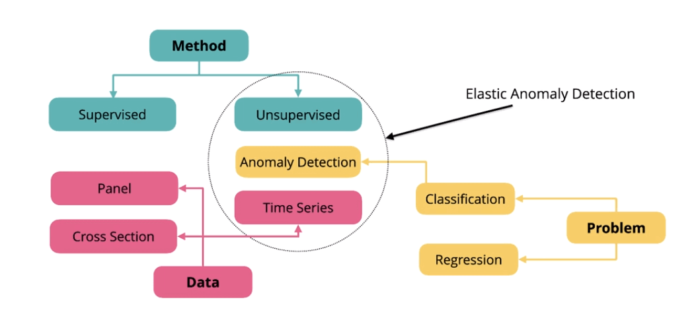
異常偵測應用
現在的系統、網路架構越來越複雜，攻擊行為也越來越多樣，難以透過設定規則、資料標記來逐一處理，所以透過收集相關紀錄後分析也許是一個比較好的解決方式，網路安全主要蒐集以下資訊
SSH logs 可以透過 Filebeat 紀錄
- Timestamp
- SSH Server Host Name
- SSh Client IP
- User
- Authentication Method
- IP Geo Information
DNS Traffic
- Timestamp
- Client IP
- Source Host
- Destination IP
- Highest Registered Domain
- Subdomain
Elastic Machine Learning 透過非監督學習來分類時間序列的資料後，其實可以大致分出項基本的決策樹
Elastic Machine Learning 異常行為決策樹
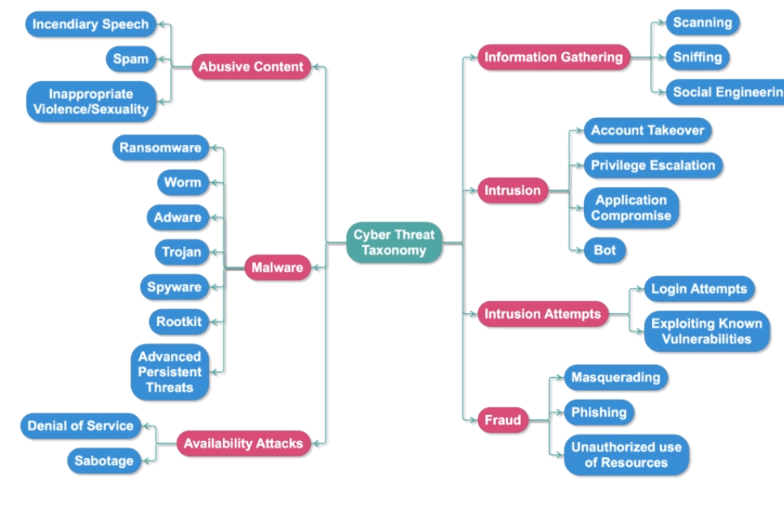
偵測異常的行為流程大致如下
- 將 SIEM 中的資料餵給機器學習任務
- 機器學習開始運算，會透過相關模型運算更新模型
- 儲存計算結果提供 Kibana 查看
- 端點防護工具監看數據或是設置告警機制
異常行為偵測流程
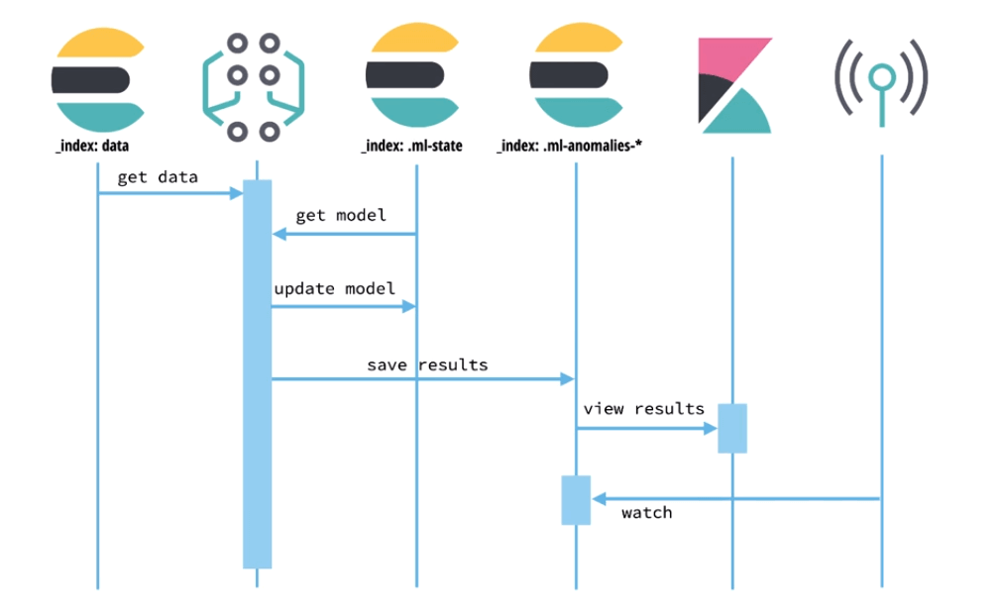
Machine learning job
使用上，需要先準備資料，資料部分則可以分析 Elasticsearch 中的或是額外透過 API 餵進來。
有資料後需要建立任務，任務可以透過 API 或是 Kibana UI 建立，一個機器學習任務包含配置資訊及所需的 Metadata，配置流程大致如下
- Job Type
- Single Metric
- Multi Metric: 可以看成跑了好幾個 Single 的概念
- Advanced
- Population
- 設定 Data Feed: 提供 Elasticsearch 中時間序列資料
- Index Pattern
- Query
- Time Range
- 設定 buckets: buckets 是切割時間序列資料的單位，通常是五分鐘到一小時，設定太長會增加運算負擔也較難看出結果，建議依照資料型態決定，最後每個 bucket 都會得到計算後的分數
Bucket 中的最大值
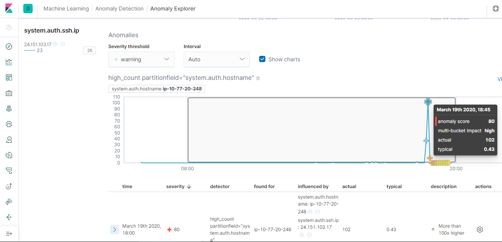
- 設定 Detectors: 每個 Detector 會針對資料中的欄位套用一種分析函式，像是最大最小、平均、極端值，最大就會找出某個 bucket 中的最大
- 設定 Influencer: 建議設置但也不能設定太多，因為太多會增加閱讀難度
- 方便找兇手，像是如果可以從 IP 看出可疑活動就可以直接設定 IP
- 協助簡化、聚合結果資料
- 執行並查看 Job 結果
- Single Metric Viewer
- Anomaly Explorer
- 監看即時資料
- 排程
- Query
- Condition
- Action
常見用法案例
- low_request_rate: 透過 low_count function 去找到比較低流量的資料
- response_code_rates: 透過 count function 並透過 code 切割資料去找到特殊 code 像是 404 的相關異常
- url_scanning: 透過 high_distinct_count function，最後透過可以透過相關分布看出是不是有哪些 IP 常打特定 URL
透過機率預測數據應該會出現在哪裏

接下來會示範如何設定與使用 Elastic Machine Learning (機器學習)，機器學習讓我們能夠更快的分析與了解資料的狀況，提供異常的告警，甚至是未來數據的預測。
Elastic Machine Learning 配置
如果只是啟用而沒有進行相關配置的話就能夠單純的看到目前資料的相關統計
連到 kibana
Management ➔ License Management 開始 30 天試用
開啟 30 天試用
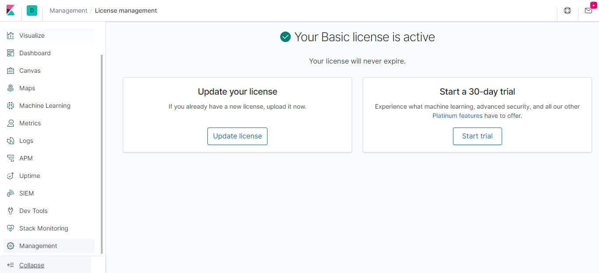
啟用之後就可以先用 ML 的資料視覺化工具看目前資料狀況
Machine Learning ➔ Data Visualizer
選取想要查看的 Index
選取 Index
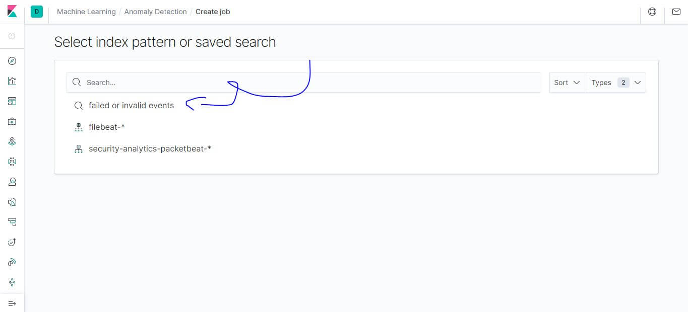
相關統計資料，先點選
Use full filebeat-* data>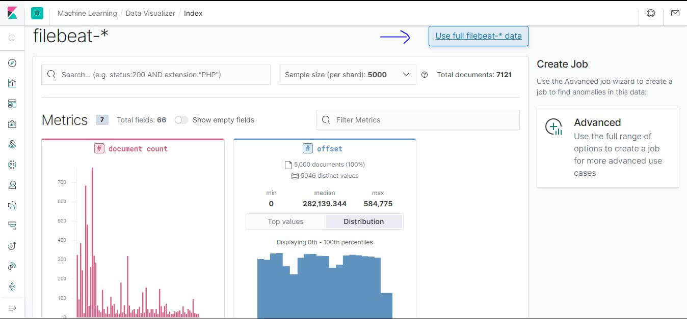
詳細到可以看出從哪個網域、IP 連進來的
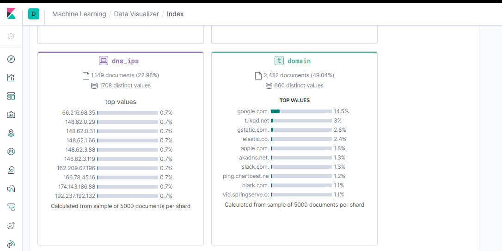
Elastic Machine Learning Job
要進行機器學習分析，首先我們要建立一個 Job 去偵測可疑的登入行為，建立前要先預備資料，因為這次只需要 failed 或是 invalid 的資料，先到 Discover 透過 filter 設定以下篩選條件，最後記得把這個 Search 的結果儲存。
- system.auth.ssh.event
- is one of
- [Failed, Invalid]
設定篩選條件
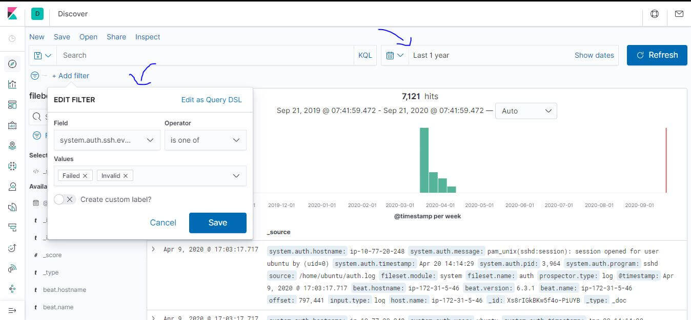
然後就可以按教學影片去建立一個 Job，這裡提供舊版的影片，包含 Single Metric 跟 Multi Metric 的過程，實際上流程差不多只是介面上稍有不同，這裡也簡單操作一次步驟如下:
從側面選單到 Machine Learning
在 Overview tab 選擇 Create Job
選擇我們剛剛儲存的 Search
選擇時間區間的時候預設可能會沒有資料，可以先點選
Use full filebeat-* data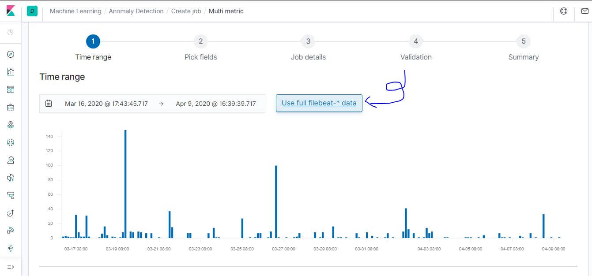
選擇 Use a wizard 中的 Single 或是 Multi Metric
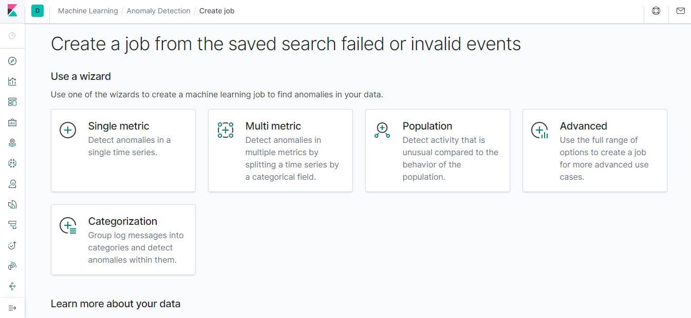
Pick fields 欄位選 High count (Event rate)
Bucket Span 填 5m: 每次迭代運算的時間間隔
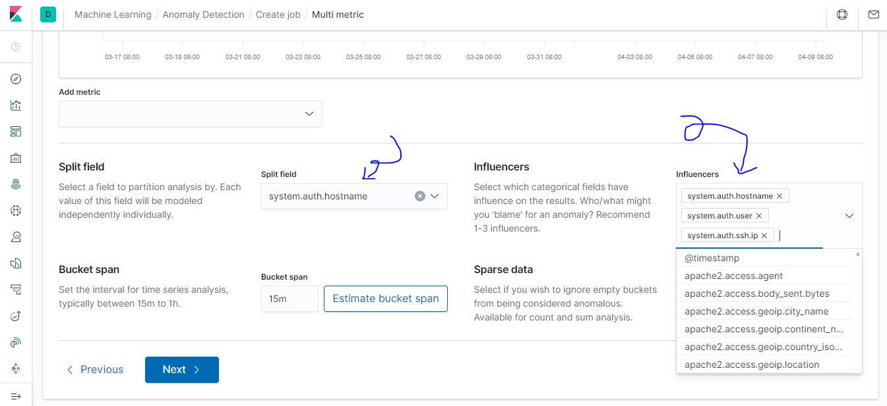
Multi 可以多配置
- Split field: system.auth.hostname，設置後會自動加入 influencers
- influencers: 可以補上 system.auth.user 及 system.auth.ssh.ip
- 讓抓到兇手更簡單
- 讓結果更簡化聚合
在 Job ID 給一個命名
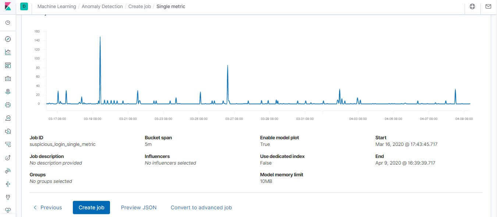
最後執行這個 Job
結果會包含計算權重分數，透過圖表標示異常值
權重分數在左側
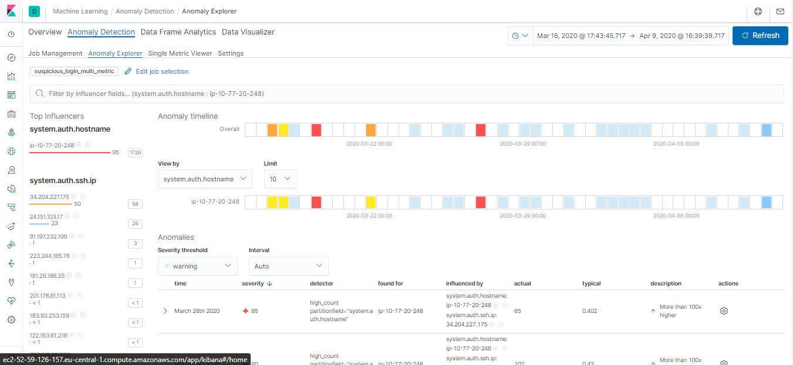
標示異常值
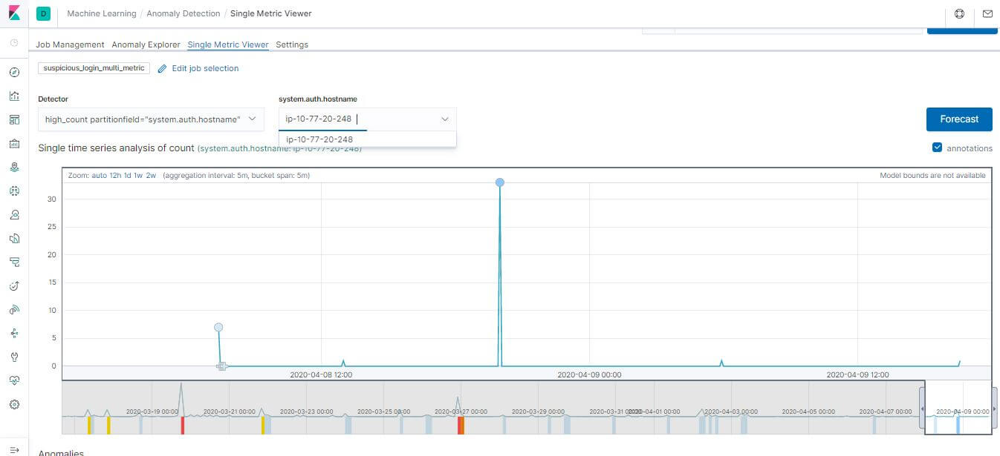
喜歡這篇文章，請幫忙拍拍手喔 🤣


站內搜尋
其他相關文章


Elastic APM 基礎教學
2020-09-12
Elastic App Search Quick Start
2020-09-06
最新的文章

人生的貪婪演算法
2024-10-05JavaScript 模組超進化
2024-10-05Zustand 關於那隻熊你了解多少
2024-10-05